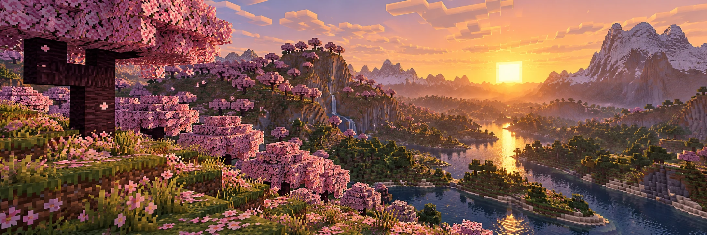

Launcher + Client für Minecraft: Java Edition
Alles deins.
Deine Profile, deine Mods, deine Welt. Tegnas bündelt dein Minecraft-Setup in einem Launcher – mit integriertem Tegnas Client und optionalem OneDrive-Abgleich.
Download direkt von GitHub · Prüfsumme & alle Versionen
Interaktives Beispiel
Klick dich durch – nichts wird installiert.

Minecraft: Java EditionDeine nächste Geschichte.
Deine ProfileBeispielprofile · wähle eins
Aktives ProfilFeierabend · 26.3
Deine InhalteBeispiel · lokal umschaltbar
Ein Profil. Dein eigener Look.
Mods, Ressourcenpakete und Shader passend zu deiner Minecraft-Version verwalten.
- ModsÜber Modrinth entdecken
- RessourcenpaketeDeine Texturen pro Profil
- ShaderPassende Version vorausgesetzt
Die Schalter verändern nur diese Vorschau.
Cloud-SynchronisierungOptional · OneDrive · Beta
Dein Setup. Auf beiden Geräten.
Ausgewählte Profildaten über dein eigenes OneDrive zwischen PC und Laptop abgleichen.
Beispiel · Es werden keine Dateien übertragen.
- Minecraft-Versionen
- 1.21.8 · 1.21.10 · 1.21.11 · 26.3
- Loader
- Fabric oder Vanilla
- Tegnas Client
- Im Download enthalten
- Anmeldung
- Offizieller Microsoft-Login
01Funktionen
Ein Launcher.
Dein ganzes Setup.
Drei Bereiche, die zusammenarbeiten. Wähle einen aus – und probier ihn direkt in der Vorschau.
02Tegnas Client
Mittendrin.
Mehr im Blick.
Der Launcher bringt dich ins Spiel, der Tegnas Client begleitet deine Runde. Er läuft mit Fabric und ist bereits im Download enthalten.
Deine Chats. Dein Überblick.
MSG-Chat mit Archiv und Offline-Schreibhilfe für private Nachrichten im Spiel.
Wichtige Infos auf einen Blick.
HUD-Anzeigen an deinen Stil anpassen und Spielinformationen im Blick behalten.
Kleine Helfer im Menü.
Shulkervorschau und Account-Wechsler im Menü ergänzen deinen Spielalltag.
03Anleitung
Dein erster Start.
In vier Klicks erklärt.
Jeder Schritt zeigt dir schematisch, wo du klickst. Die Markierung zeigt das Ziel.
Optional: OneDrive auf einem zweiten PC einrichten
- Öffne im Launcher System → Cloud-Synchronisierung, verbinde OneDrive und wähle deine Profildaten.
- Verbinde auf dem zweiten Gerät dasselbe OneDrive-Konto.
- Lade das Cloud-Profil herunter oder verknüpfe es.
Die Cloud-Funktion ist in der Beta. Warte vor dem Gerätewechsel auf den abgeschlossenen Abgleich. Minecraft-Anmeldungen sowie RAM-, Java- und Bildschirm-Einstellungen bleiben auf dem jeweiligen Gerät. Große Profile brauchen beim ersten Übertragen mehr Zeit.
04Download
Nächster Halt:
Deine Welt.
Tegnas Launcher und Tegnas Client – gemeinsam in einer Datei. Kostenlos.
TegnasLauncher.exe herunterladenDatei überprüfen (SHA-256)
Prüfsumme der aktuellen Datei, wie von GitHub angegeben:
3aa94067b328ddabdd275ae31398455020b5f8d1184a9c4123c00a856a2241f0
05Updates
Tegnas aktuell.
Die neuesten veröffentlichten Änderungen aus den GitHub-Releases.
Veröffentlichte Änderungen aus den GitHub-Releases.
Alle Änderungen auf GitHub (neuer Tab)Release-Informationen werden geladen. Auf GitHub ansehen
06FAQ
Gut zu wissen.
Deine Frage ist nicht dabei? Frag die Community auf Discord.
Frag uns auf Discord (neuer Tab)Was brauche ich zum Spielen?
Windows 10 oder Windows 11 in 64 Bit und ein Konto mit Minecraft: Java Edition. Du meldest dich im Launcher über den offiziellen Microsoft-Login an. Tegnas selbst ist kostenlos.
Fabric oder Vanilla – was wähle ich?
Mit Fabric stehen dir der Tegnas Client und passende Mods zur Verfügung. Vanilla startet Minecraft ohne diese Client-Funktionen. Unterstützt werden 1.21.8, 1.21.10, 1.21.11 und 26.3. Zusätzliche Mods, Shader und Packs müssen zu deiner Version passen.
Ist OneDrive notwendig?
Für lokale Profile brauchst du kein OneDrive. Die optionale Cloud-Synchronisierung benötigt dein eigenes OneDrive-Konto mit ausreichend freiem Speicher. Minecraft verwendet weiterhin lokale Spielordner.
Wie bekomme ich Updates und Hilfe?
Neue Versionen werden im Launcher angeboten; Änderungen findest du im Bereich Updates und auf GitHub. Bei Problemen helfen die integrierte Konsole und die Logs. Fragen kannst du auf Discord stellen; Fehler und Ideen kannst du auf GitHub melden.
Was zählt der Download-Zähler?
Er summiert die von GitHub gemeldeten Downloads von TegnasLauncher.exe über alle veröffentlichten Releases – inklusive Updates und Mehrfachdownloads. Er ist keine Nutzerzahl. Ist GitHub nicht erreichbar, zeigt die Seite einen gespeicherten, datierten Stand und kennzeichnet ihn.
07Community
Tegnas ist auch
dein Ding.
Feedback macht den nächsten Schritt besser. Frag nach, melde einen Fehler oder bring eine Idee ein.